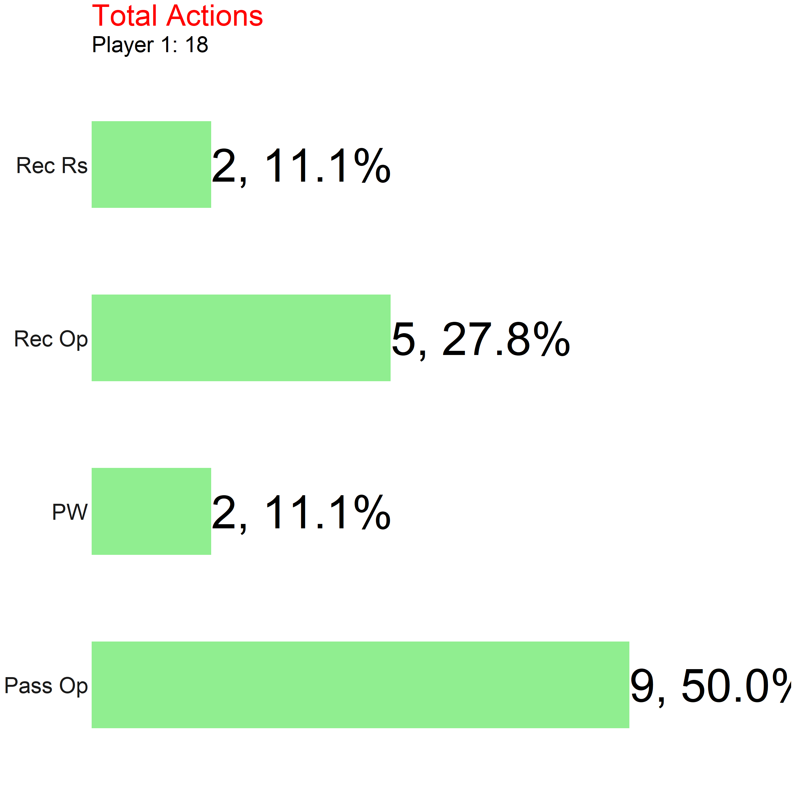
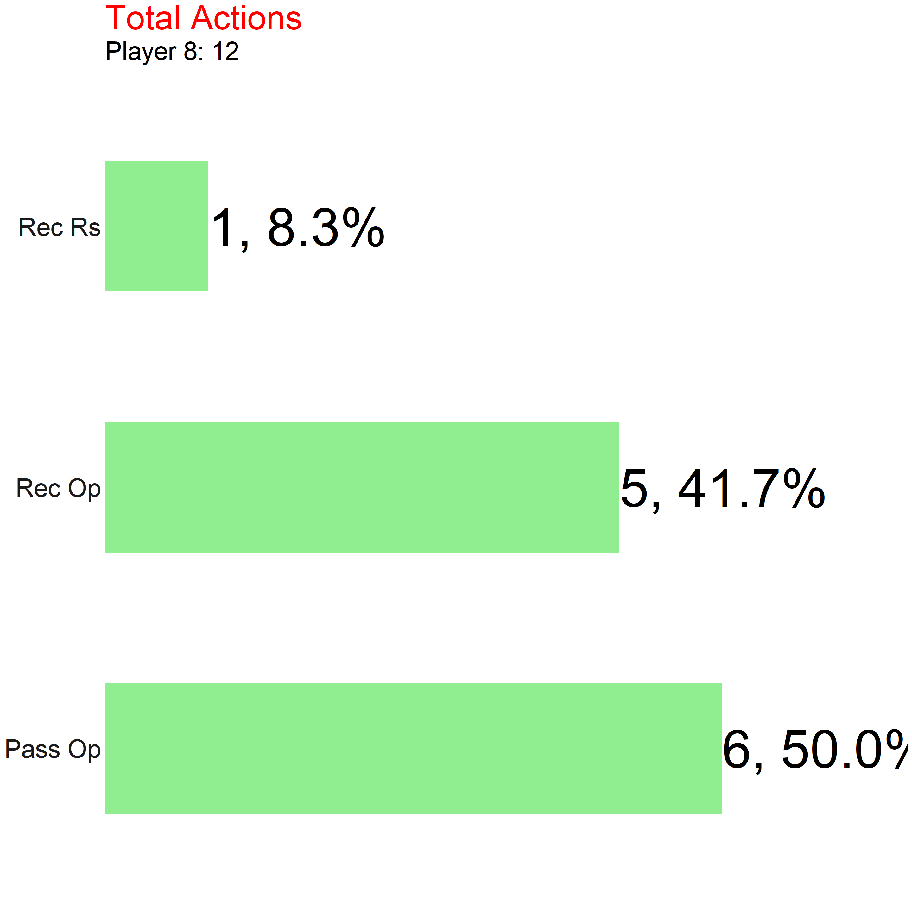
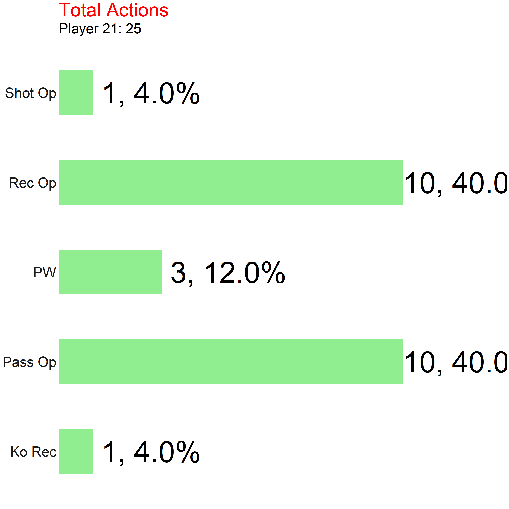
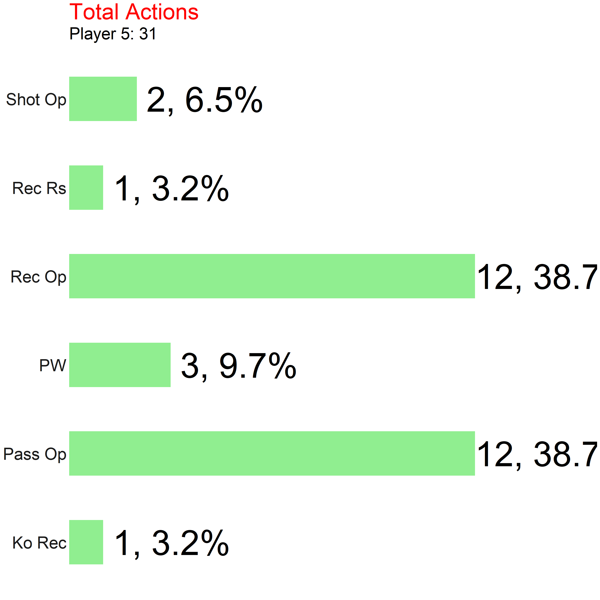
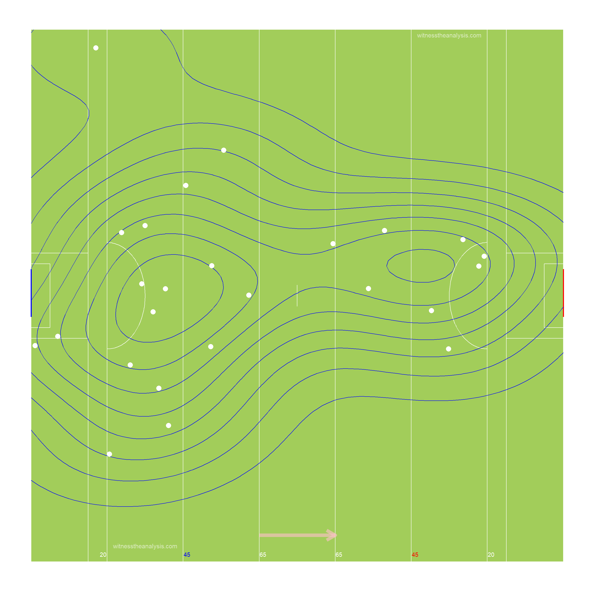

Player Stats - Carbury vs Johnstown
1 O Neill

2 Reilly

3 Groome
4 Cummins
5 B O Flaherty
6 A O Flaherty
7 Dermody
8 Kearney

9 Carey
10 Kelly
11 McCormack
12 E O Flaherty
13 Cully

14 McGlynn
22 Cunningham

21 Kelly

23 McKeown
24 Cully
18 Milmore
1 Hurley
2 O Connor
3 J Higgins
4 A Higgins


5 Flanagan

6 McNally
7 Cribbin
